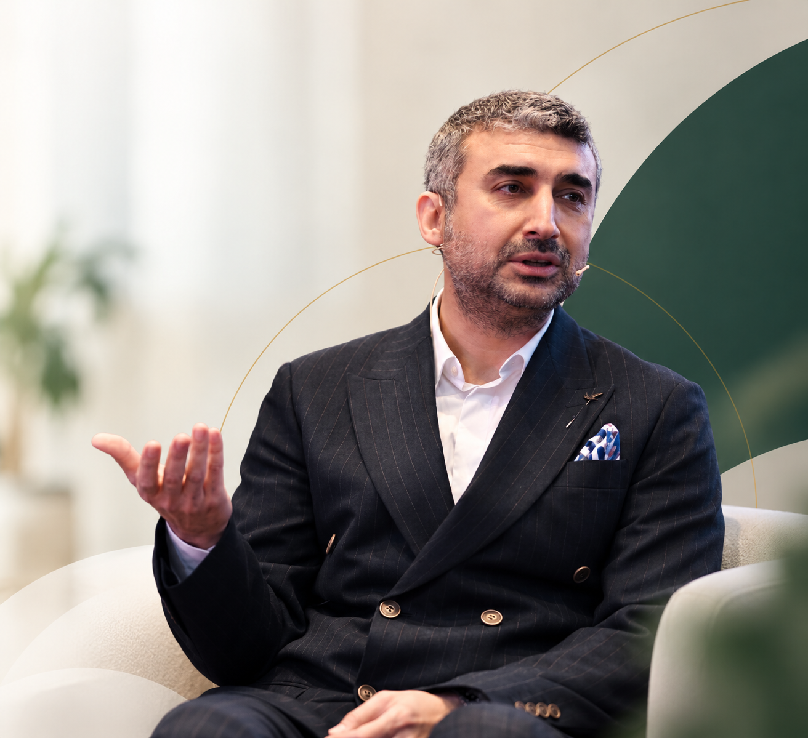
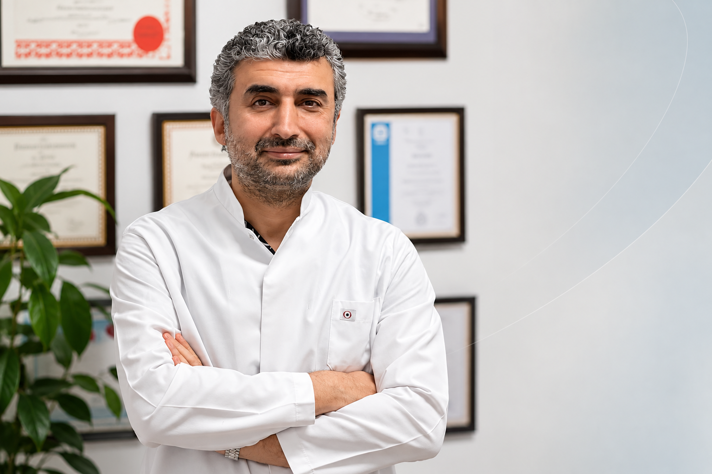

01
Ritim Bozuklukları
Çarpıntı ve farklı aritmi türlerinin değerlendirilmesi ve takibi.
Kalp ritim bozuklukları, elektrofizyoloji, ablasyon ve kardiyak cihazlar alanında klinik ve akademik çalışmalar.
Kartal Koşuyolu Yüksek İhtisas Eğitim ve Araştırma Hastanesi
Sağlık Bilimleri Üniversitesi Kardiyoloji Anabilim Dalı

Kalp ritmini anlamak, doğru yaklaşımın ilk adımıdır.
Doç. Dr. Serdar Demir, kardiyoloji alanında klinik ve akademik çalışmalarını sürdürmektedir. İstanbul Kartal Koşuyolu Yüksek İhtisas Eğitim ve Araştırma Hastanesi Kardiyoloji Kliniğinde Doçent Doktor ve Eğitim Görevlisi olarak görev yapmaktadır.
Sağlık Bilimleri Üniversitesi Kardiyoloji Anabilim Dalı akademik kadrosunda yer almakta; kalp ritim bozuklukları, elektrofizyoloji ve kardiyak cihazlar alanlarında çalışmalar yürütmektedir.
Akademik çalışmalar →
Kalp ritim bozukluklarının değerlendirilmesi, tanı süreçleri ve girişimsel tedavi yaklaşımları.
Çarpıntı ve farklı aritmi türlerinin değerlendirilmesi ve takibi.
Kalbin elektriksel sisteminin elektrofizyolojik yöntemlerle incelenmesi.
Uygun ritim bozukluklarında girişimsel ablasyon tedavilerinin planlanması.
Atriyal fibrilasyonun değerlendirilmesi, takibi ve tedavi seçenekleri.
Kalp pili gereksiniminin değerlendirilmesi ve kardiyak cihaz takibi.
İmplante edilebilir defibrilatör ve kardiyak resenkronizasyon cihazları.
Kalp hastalıkları ve ritim bozukluklarında görülebilen belirtiler hakkında Doç. Dr. Serdar Demir'in bilgilendirme videosu.
YouTube'da izle ↗Karotid sinüs aşırı hassasiyetinin tedavi yaklaşımı hakkında Doç. Dr. Serdar Demir'in bilgilendirme videosu.
YouTube'da izle ↗Ulusal ve uluslararası bilimsel çalışmalarında kardiyoloji, elektrofizyoloji, atriyal fibrilasyon ve kateter ablasyonu alanları yer almaktadır.
Sık karşılaşılan kardiyoloji ve ritim konularını anlaşılır şekilde ele alan içerikler.
Muayene ve hastane süreçleri için kurumun resmî iletişim kanallarını kullanabilirsiniz.